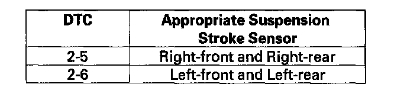
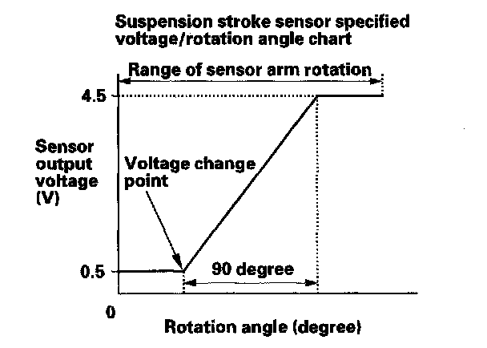

DTC 2-6
DTC 2-5: Right-front/Right-rear Suspension Stroke Sensor Range/Performance ProblemDTC 2-6: Left-front/Left-rear Suspension Stroke Sensor Range/Performance Problem
1. Turn the ignition switch OFF.
2. Remove the appropriate suspension stroke sensor. Do not disconnect the sensor connector.
NOTE: After troubleshooting for the left side suspension stroke sensor, do the headlight initial position learning procedure.

3. Start the engine, and wait 5 seconds.
4. Check the SUS STROKE_S VOLTAGE (RF) (LF) (RR) or (LR) in the ACTIVE DAMPER SYSTEM DATA LIST with the HDS while moving the suspension stroke sensor arm through a complete stroke. Compare the voltage/rotation angle between the chart and the measurements.
NOTE: The voltage should increase (decrease) within 90 degrees of the sensor arm rotation from the first voltage change point.

Is the voltage as specified?
YES - Replace the active damper control unit.
NO - Replace the suspension stroke sensor.